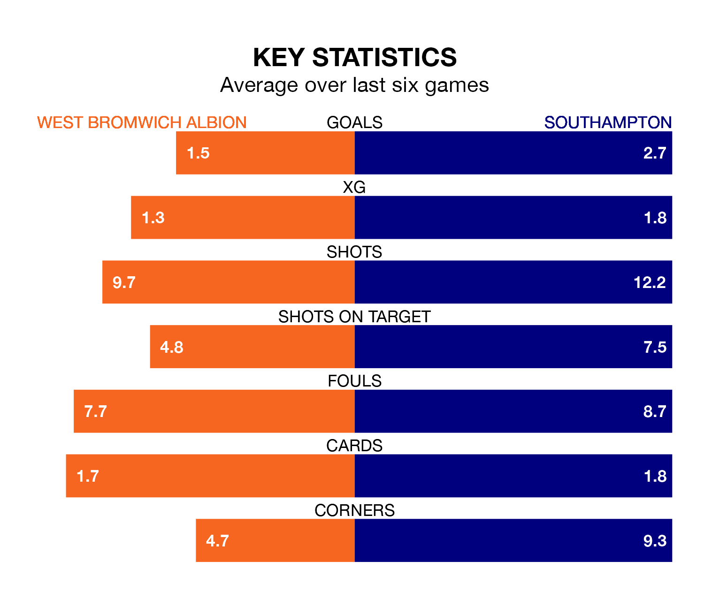

Southampton travel to the Hawthorns for Friday's late match against West Bromwich Albion looking to bounce back from defeat last time out in EFL Championship.
The Saints, who sit third in the league after 31 games, fell to a 3-1 away defeat to Bristol City on Tuesday.
They face a West Bromwich side who picked up a win in their last match, a 2-0 victory against Cardiff City, and who sit fifth in the table.
With 61 goals in 31 games so far this season, Southampton are the league's second-highest scorers with 2.0 goals per game. And they are conceding fewer than average, letting in 38 goals at a rate of 1.2 per game.
West Bromwich are also above average scorers, with 1.5 goals per game, compared to a league average of 1.4. They have conceded 0.9 goals per game.
In Alex Palmer, Albion can rely on one of the league's safest pair of hands. He has kept 14 clean sheets in his 31 appearances this season, and no 'keeper has prevented the opposition scoring more often in EFL Championship.
In the Saints' net, Gavin Bazunu has nine clean sheets in 31 games. He has conceded a goal every 80 minutes, 30% more often than the 107 minutes between goals for Palmer.
In the last 10 years, West Bromwich and Southampton have played each other on 12 occasions. West Bromwich won three of them, Southampton seven, and they drew twice.
On average, the Baggies scored 0.8 goals and the Saints 1.2 in those matches.
Their last meeting was on November 11, when Southampton won 2-1 at home.
The Baggies are in mixed form in EFL Championship, with three wins and a draw from their last six games.
With four wins and a draw over that period, the visitors' form is better – they have taken 13 points from 18, compared to the home team's 10.
Friday's match will be refereed by Samuel Allison, who has taken charge of 10 EFL Championship games so far this season, issuing one red card and booking 42 players. He has awarded one penalty.
He is yet to oversee a match featuring either West Bromwich or Southampton this season.
Updated: 13:04 (UTC), 16/02/24